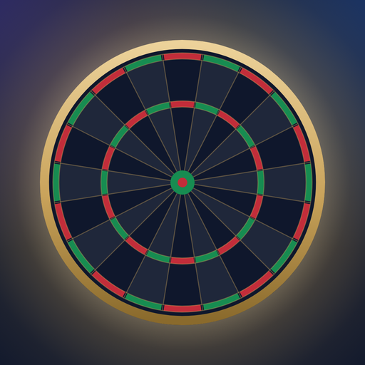

Dardo: Darts Checkout Trainer
Checkouts im Kopf trainieren. Für iPhone und Android.
Train checkouts in your head. For iPhone and Android.

Checkouts im Kopf trainieren. Für iPhone und Android.
Train checkouts in your head. For iPhone and Android.